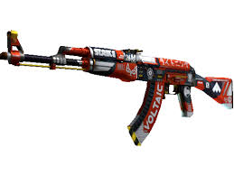

SKIN MAS COMPRADA
AK-47 | BloodSport
Estado: Recién fabricado
Potente y fiable, el AK-47 es uno de los rifles de asalto más famosos del mundo. Es sumamente letal en ráfagas cortas y controladas. Se ha cubierto con adhesivos de logotipos blancos sobre un hidrográfico rojo y negro. Se busca copiloto.
Colección Espectro
Mas Skins
USP-S | Kill Confirmed
.
Estado: Casi Nuevo
La favorita de los fans de Counter‑Strike: Source, la pistola USP con silenciador desmontable tiene menos retroceso y hace menos ruido para no llamar la atención. Se ha personalizado con la imagen de una bala rompiendo un cráneo. 2 en el pecho, 1 en la cabeza
Colección Sombría
AWP | Elite Build

Estado: Casi Nuevo
Alto riesgo y alta recompensa, el infame AWP es reconocible por su característico sonido y su política de «un tiro, una muerte». Se ha personalizado usando una combinación de adhesivos hidrográficos y cuidadoso estarcido y se le han añadido detalles con pegatinas de transferencia térmica. Chase Turner era un gran hombre... tienes el listón muy alto —Phoenix y el novato, primera parte
Colección Wildfire